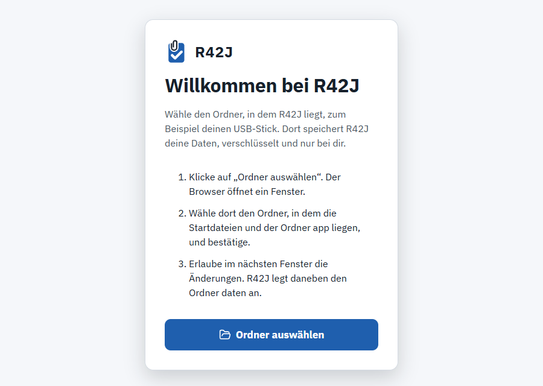
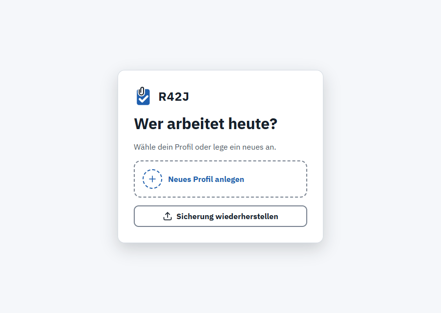
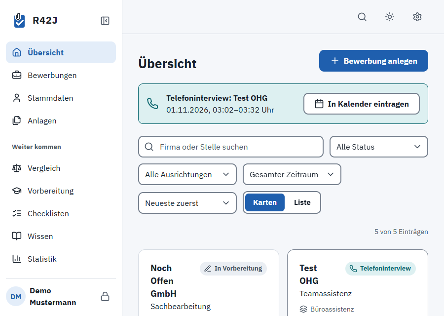

R42J hilft dir bei Bewerbungen: Stammdaten, Lebenslauf, Anschreiben, Versand, Termine und Vorbereitung. Es läuft ohne Installation vom USB-Stick, und deine Daten bleiben verschlüsselt bei dir. English version below.
Doppelklicke auf Start (Windows).cmd. Fragt Windows SmartScreen nach, wähle „Weitere Informationen“ und „Trotzdem ausführen“.
Der Mac warnt beim ersten Start, weil R42J nicht bei Apple registriert ist.
Start (Mac).command und wähle „Öffnen“.Klappt das nicht, öffne Start.html per Rechtsklick → „Öffnen mit“ in Chrome oder Edge. Die Anleitung für den Mac wurde noch nicht auf einem echten Gerät nachgestellt und kann je nach macOS-Version leicht abweichen.
R42J fragt beim ersten Start nach seinem Ordner. Klicke auf „Ordner auswählen“, wähle den Ordner mit den Startdateien und erlaube die Änderungen. Daneben entsteht der Ordner daten.

Wähle „Neues Profil anlegen“. Der Assistent führt dich durch Passwort, Wiederherstellungsschlüssel und deine ersten Angaben.

Wichtig: Drucke den Wiederherstellungsschlüssel aus und bewahre ihn getrennt vom Stick auf. Ohne Passwort und Schlüssel kommt niemand mehr an deine Daten.
Danach siehst du die Übersicht. Unter „Wissen“ findest du den Artikel „Erste Schritte“.

daten zur Sicherheit auf deinen Rechner.app.Lösche oder ersetze den Ordner daten nie. Dort liegen deine Daten.
R42J hat keinen Server und kein Konto. Ins Netz geht es nur bei Links, die du selbst anklickst, und bei der Update-Suche, wenn du sie einschaltest. Sie überträgt keine Daten von dir. Die KI-Funktionen laufen über Kopieren und Einfügen in einen Chat deiner Wahl. Persönliche Angaben werden dabei standardmäßig durch Platzhalter ersetzt.
R42J steht unter der GPL-3.0, siehe LICENSE. Mitgelieferte Bibliotheken und Schriften stehen unter ihren eigenen Lizenzen, siehe app/lib/LICENSES.
R42J helps you with job applications: base data, CV, cover letter, sending, appointments and preparation. It runs from a USB stick without installation, and your data stays encrypted with you.
Start (Windows).cmd. If SmartScreen asks, choose “More info” and “Run anyway”.Start (Mac).command, choose “Open” and confirm. If the Mac does not offer this, go to System Settings → Privacy & Security, scroll to Security and click “Open Anyway”. These Mac steps have not been checked on a real device yet and may differ slightly by macOS version.Start.html and open it in Chrome or Edge.daten folder appears next to it.Important: Print the recovery key and keep it away from the stick. Without password and key nobody can reach your data.
daten folder to your computer to be safe.app folder.Never delete or replace the daten folder. That is where your data lives.
R42J has no server and no account. It only goes online for links you click yourself and for the update check if you turn it on, which transfers none of your data. AI features work by copy and paste into a chat of your choice. Personal details are replaced by placeholders by default.
R42J is licensed under GPL-3.0, see LICENSE. Bundled libraries and fonts have their own licences, see app/lib/LICENSES.